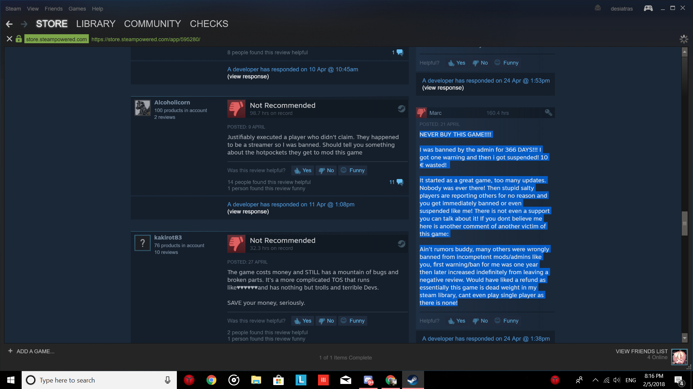
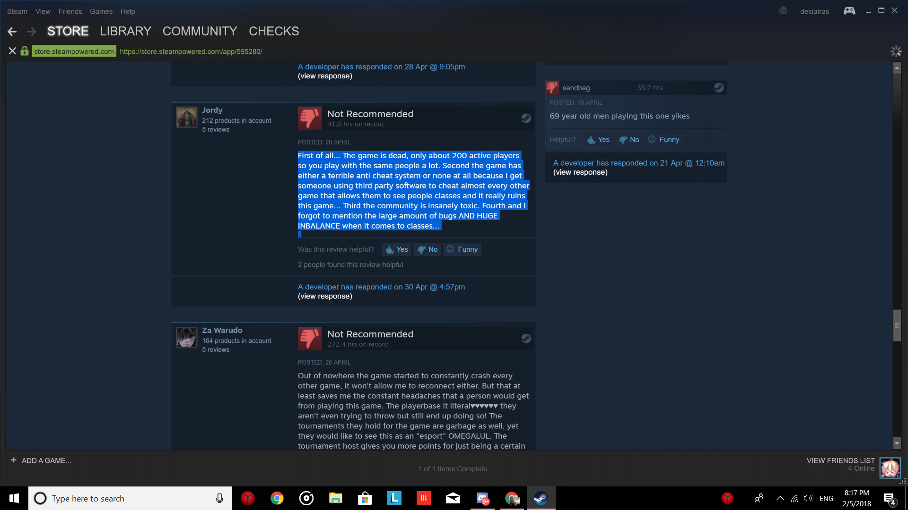
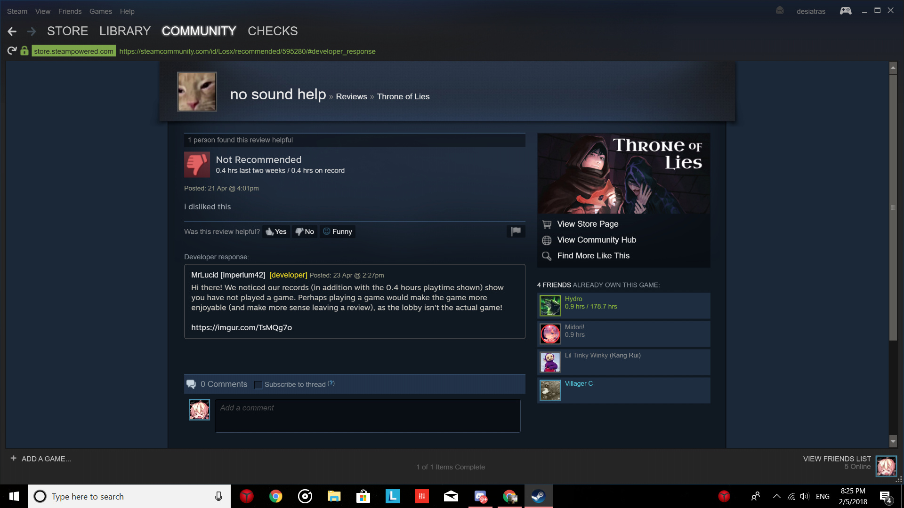

I like our current system for moderation, but I’ve been thinking for a while now that it’d be a good idea to invite people to help with reports. When I do reports, it takes me between about 7 to 15 minutes per report depending on what a person was reported for. Because of the amount of time it takes to go through a report, the number that I can do in a given period is limited. We have guides that can do reports if they want, but the majority don’t. However, when the guides do help with reports, I can blaze through them because everything I need is already laid out for me. I assume it would be complex to allow other players to go through reports because some of the information is secret so leaks could be a problem. And even if we did let certain trusted players go through reports, I fear it would likely end up the same way it is now with only judge+ going through reports with a sprinkle of a guide now and then.
The three strike system I think could also work well with things like game throwing, spamming, and non-racist/homophobic IGNs. Other reports that are harsher like being racist, threats towards other players and cheating would obviously need to be excluded from this system and maintain the level of severity they’re at now.
@Rezid I know for me personally that there is no way I have the time it would take to have the responsibility of going through reports. It would be way down on my priority list, and there’s nothing that could really be done to change that. I’m sure I can’t be the only one.
@í42-Xblade if you’re going to do a system with warnings, you should probably only give one warning per any individual offense. So if somebody is reported for gamethrowing, give them a warning. If they are then reported for spamming, warn them again; if they are instead reported for gamethrowing again, give them a suspension. Three warnings on any individual infractions (for example, gamethrowing, then spamming, then out-of-game communication) should also lead to a suspension. Although some people may still revenge review, having the information that they were personally warned that continuing their actions would lead to a suspension will still be useful.
There are a lot of types of people. Let’s focus on these.
Those who have a lot of time in, who cannot bear being suspended or warned and not in the official hub.
Those who make accounts, feed money to bring down the reviews.
Those who make constructive feedback, who have a logical reason.
Think about this. When we tell people to leave a review, only those who really care about the game would leave a good review with examples to pull up.
When do you review negatively? Now people don’t necessarily review stuff. I only reviewed this game (and few others) because I felt they were gems among the crowd. For most games, I don’t bother.

People leave negative reviews for 3 reasons. The less common case is that they are lacking rationality in that particular case. When one is angry, one tends to lose all sense of rationality and sensibility, and can result in “THIS GAME SUX, THEY BANNED ME BECUZ ??? (Whatever devs and more insults)” You can picture those reviews. Like those in reviews.
The more common ones are however, “this game sux.”. This is what I’ve noticed. Also I can see some lie indefinitely (See highlighted in above pic.) possibly because they were angry? I do not know.

This is a little constructive, with salt sprinkled in. The one review below the higlighted one is one of the SALT and IRRATIONAL category. When people lack information, they can start misunderstanding and this can cause so much discrepancies among people.
You see developers trying so hard, why? Because they love their game! They put their hard work in, and its disheartening to see such negative reviews impact the game (44 reviews as of this time and 68% positive).
I shall assume most of the people leaving negative reviews were suspended and salty at the point of reviewing.
And for those thinking of those splashing money and leaving a negative review…

I am honestly appalled.
The moderation is currently doing good. I have seen and compared it to many games, and none are as transparent as ToL. However, those who don’t have Discord or here may miss out on the community! Try making Instagram or Twitter pages to spread our love!
(We have reddit as well, but personally I don’t use it much.)
Urrr MY GOD, THEY SUSPENDED ME FOR SAYING (racist stuff) (more derogative rage terms).
No. People in an irrational mind won’t think properly. The best way is to let them cool down before approaching them, but not for too long (about a few hours off from the negative experience or suspension.) Often people think they’re right, being proven wrong isn’t exactly a fire-free way. (Definitely going to receive backlash, I can’t see a way tho D:)
Honestly, there is potential backlash in every situation. But I believe the correct and logical way is always the right one to go.
(Would you tone back on the “N*gga” Situation? Just because some people don’t believe it as offensive, while others do. Would you turn back on gamethrowers because some people are just jerks and are jerks even on the net?)
Does it ruin the majority of other players’ experience? If so, that would be one of the criteria worthy of being suspended.
Do as you believe. For personally, I believe your moderation is one of the best out there. Keep it up.
(Do a poll on what people find offensive on Discord? On any social website as well would be swell!)
Let me preface this my saying I didn’t play online games growing up. I started playing League of Legends (which has one of the most toxic communities ever) when i went to college, and had been playing it for a year and a half when I started Throne of Lies. That means that I’m used to quite a bit of toxicity, and I find ToL to be extremely welcoming and easily offended by comparison.
My guess is that people some of the people getting suspended have backgrounds similar to mine. If you’re coming from a highly toxic game to ToL, it’s a culture shock, and they likely don’t know what good behavior is here, and if they do, they probably consider you to be overly sensitive.
So, my biggest reccomendation is to formally codify your rules. “Targetted harrassment” means different things in different games, but something like “Targetted harrassment is considered to be at least 3 demeaning comments addressed towards a specific player” is pretty clear cut. Furthermore, it’s a lot harder to argue that you broke the rules when there’s a clear rubric for each one.
Secondly, I’d add feedback after you report someone. As you said, a lot of the people being banned aren’t on the Discord, so thry never see who gets banned. They have no idea what is and isn’t bannable, since they can’t see #justice. I wouldn’t reccomend adding justice to ToL itself, but I would send notifs like “We acted on your report and suspended Biperspectival for three days for targetted harassment; it was his 3rd offense.”
Finally, I’d say how long people are suspended for in #justice. For example, I saw a penis deathnote with swastikas and “oh no! report me” on it in justice. Beneath it was someone totally cussing out another player with a variety of slurs. Now, I just don’t think the first is as bad as the second, but I had no information on suspension times, so as far as I know, you consider them equally bad.
A final final note: I think the “three strikes rule” is a terrible idea. Three warnings and then a ONE YEAR suspension? That’s going from 0 to 60 in 3 seconds. If they aren’t taking your reports seriously, it seems sort of cruel to not do anything to make them change their behavior and then just boot them out.
Three strikes to a year is super extreme. Three strikes to a suspension may work, but the extremely harsh punishment after three warnings will probably only worsen the issue.
I’d prefer to see a bit of a different system. Maybe this might help:
Actual Toxicity: You get a freebie warning to stop. After that, you get suspended (few days, maybe a week). If enough time passes, maybe you just get another warning and a short suspension like before. If you’re still toxic like immediately after coming back, longer suspension (few weeks, maybe a month). Still toxic? Get multiple months, etc. Permaban usually just results in the person buying another copy of the game, which is great for sales, but not great for the community.
Gamethrowing (As BD: not having logs, not claiming to Prince, etc. As Unseen/Cult: Telling people who your allies are): Assuming the player has played at least X games (X being a pre-determined threshold that shows they have some level of competency with the game), maybe the same system as toxicity but at max, like a week ban. Toxic behavior is much worse than gamethrowing and that should reflect in punishments.
False Reporting: Mostly warnings but eventually escalate it to suspensions if it gets out of hand. Definitely do give these people warnings at the very least.
We can see how many games players have played + report/warn/ban history.
We always take that into consideration, especially for gamethrowing, false reporting, leaving intentionally, etc.We ensure patterns exist. Almost all offenses start with just a warning unless it’s extra bad.
…but we get quite a lot of revenge reviews for even warnings O_o one even for an FYI message (friendlier popup, friendly noise/icon, etc). The guy had like 750 hours.
The thing is, if it was an offline game or a private game, we wouldn’t care what people do because it doesn’t affect anyone else and your private groups won’t report you. However, for public games, each disruptive/offensive action ripples and impacts 15 other players per match.
haven’t read through these walls of texts, but my idea is to give someone 10 strike levels basically
if they break a minor rule like asking for converts or something, put 1-2 strikes. strikes are temporary and will go away after time. something major like being racist/harassing someone can give from 3-6 strikes, if they have more than 5 they have to wait a while before queueing(or you could make it so for every strike they have, they have to wait a minute before they can queue up, starting from when they try to queue). oncethey reach 10 they get a suspension/ban depending on what they did. so that way minor things are treated as harshly and major things can be treated like major things.
not sure how goodmy idea is, it’s probably trash tbh, but i wanted to try and help
But in all seriousness, I don’t play the actual game that often. I play on the forums very often, though, and every ban I’ve seen was entirely reasonable. The moderators you chose for here all deserve their perch as moderators. I’m not sure about the steam game, as I have seen some toxicity in the community, but judging by the moderators you chose for here, you probably chose good ones over there. Keep up the good work, devs. You too, mods.
I like the system we have as a community already. While I do not have too much feedback, when I do reports, I know it always feels good and there are others that feel like this too.
As Rezid had said, reports take a bit of time each to look through, then conclude, however, unlike Rezid, I disagree that having other volunteers is necessarily what we could use. When Wolf and myself have time, we often do some (Can’t speak for everyone else though)
Good job all for making this community as good as it can be.
I agree with Xblade’s sentiment in which this community is probably the best I know for a game. For the few which stand against this theory, we have things to deal with this such as our Judges+.
Despite me not being able to say much about the reporting system itself as it’s a secret, I have no improvements I can really think for it. It’s a good all round way to show reports, the information and allow for a fair judgement to be given
Positive feedback for correct reporting in-game should be added in my opinion, so people that do not read the forums/discord can see their reports hold meaning. Something like blabla received a 3-day suspension partly through your report. Good job on helping the community! Even special equips/emotes or something could be attached to this for the truly honorable, but I can see how that can be dangerous.
As someone who acts a bit crass online and has been temp banned numerous times in this game, I do have a few comments to make. I feel like they’re as valid as anybody elses, especially since I’ve actually been on the receiving end of mods in this game for quite some time.
A few things:
Leavers, throwers, and AFKers are the actual issue with this game - and the moderation team does not do nearly enough to deal with them. These people should be the number one priority as they kill the actual GAMEPLAY and can ruin the game. If this game wants to grow, it needs moderation adjusted to punish these types of people sooner because they ruin games far quicker than any “racist” or “vile” language ever could. That leads me into my next point.
The language policing in this game is unlike anything I have ever seen in my entire life, the mods obsession with creating a ‘non-toxic’ environment only breeds more inventive ways to do so. The fact that you can’t even make your name “Donald Trump” is comical and downright silly. The mods should look into implementing a “mute user” or block button of some sort to solve 99% of these issues. I come from CS:GO which has little to no moderation, and if you have an issue with someone you can just mute them - it’s very easy and solves all problems. I think you will find that catering to word policing only makes room for more, and it becomes a slippery slope as to what should be allowed and what shouldn’t. Banning blatantly flagrant terms like “N*****” or “F**” makes complete sense, but other examples are just patently ridiculous.
Overmoderation murders games, look what’s going on with Blizzard and Overwatch - they’re a laughing stock for the orwellian oversight they’ve given to their game. I want nothing but this game to grow, and the answer to that isn’t banning someone from a game they PUT MONEY INTO for an entire year, the fact this is even put on the table frightens me.
All these rules and decorum declarations are creating an entire community of report-happy children who can’t handle themselves and come crying to a dev whenever something happens they don’t like. I see people report someone else just because they didn’t “make the right play”, it’s creating dependency where it shouldn’t be and hurts the gameplay. It would help to put out a statement that reports should be issued to the most serious offenders, and those would be people who change the actual gameplay (i.e. a cult leader who outs all his followers for no reason, AFKer, etc.) Almost everything else could be fixed by a mute button.
My conclusion: Focus on moderating issues that affect actual tangible gameplay and not abstract industry buzzwords like ‘toxicity’, and leave it up to players to decide who they do and don’t want to hear.
I respect your opinion, but I feel compelled to address some of your points too.
Just because “racist” or “vile” language might not personally ruin the game for you. It can definitely hurt a player, that that language is actually targeting, a lot more than a random BD throwing. I for one, find it refreshing that the developers actually take a harsh stance on that, as opposed to, as you say, many other games.
A mute button simply cannot be the answer in a social deduction game. Social play is the main drive of this game. This is just a way different genre than something like CS:GO or LoL. I don’t know much about CS:GO personally, but in LoL you can at least clarify your actions/intentions/strategy with pinging or just walking in a direction or something like that. The same does not apply to ToL in the slightest. The answer of “Just mute them” also puts the burden on having to deal with the problem on the “victims”. This toxic behavior should simply be ousted from the community, if they don’t change after a reprimand. It’ll increase the overall longevity of the game, as it at least has a welcoming friendly community. Something that is also desperately needed, because of the very steep learning curve.